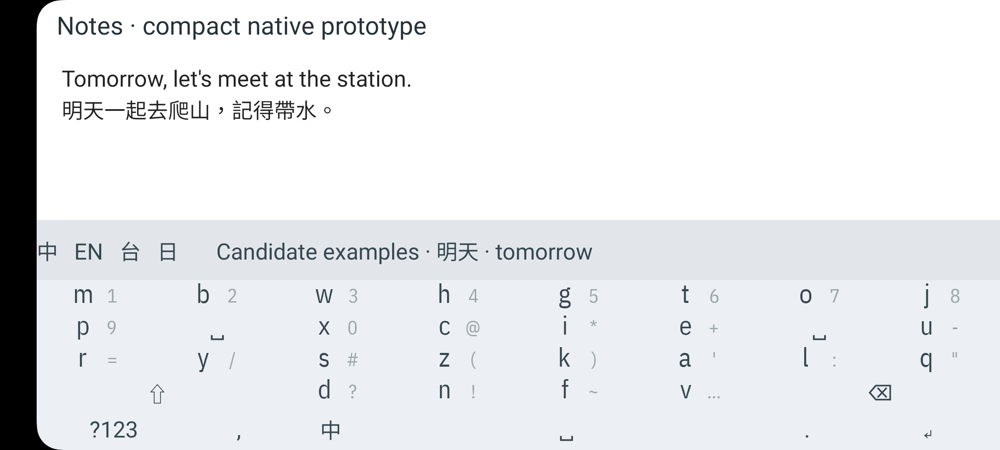
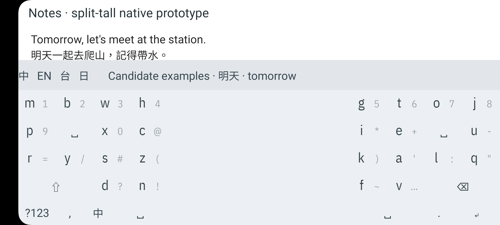
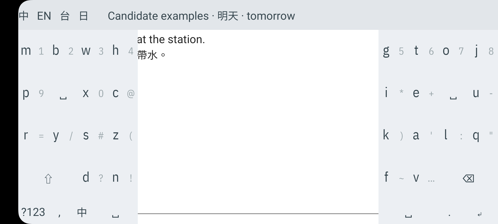
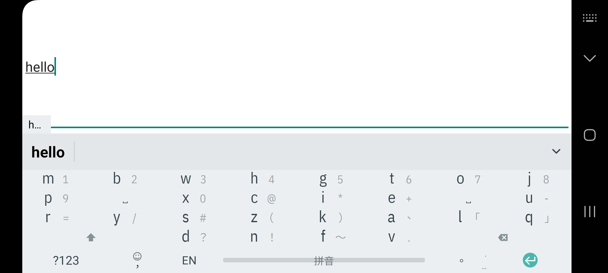

SM-G781B · Android 13 · 18 September 2026. Keep compact; the split recommendation is withdrawn because the center does not provide usable editing space. Split layouts shown here are native Android activity prototypes with sample candidate labels.
592 of 592 injected prototype actions produced their intended output. This checks software touch routing, not human accuracy or typing speed. All six final instrumentation tests passed. The phone was restored and its display verified off.
25.5 dp rows; 176 dp clear above.

25.5 dp rows; 176 dp clear above. Rejected: the empty center returns no editing space.
44 dp rows; 96 dp clear above. Rejected: more editor height is lost while the center remains unusable.

68 dp rows; covers app text and title.

Real IME window after fixing the clipped Space label.
